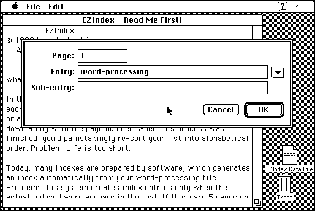

Download
EZIndex1.01.zip (213K) EZIndex 1.01 repackaged into a zipped hfs disk image and checksum file. The disk image can be mounted with Mini vMac.
EZIndex1.01.sea.hqx (324K) EZIndex 1.01 in the original format.
copyright: John V. Holder
mod date: Apr 10, 1999
license: shareware
last known url
(gone)
Assists in “creating an index for a book”. For System 7. “EZIndex Maker” may require System 7.5.

If you find these downloads useful, please consider helping the Gryphel Project, which hosts them.
Here are the md5 checksums for the downloads, signed with Gryphel Key 5:
--------- GRY SIGNED TEXT --------- e8c703c30d87724f8d806be3fac6f1ad EZIndex1.01.zip 68ed8b10f125121df64ed651bd78785b EZIndex1.01.sea.hqx ------- BEGIN GRY SIGNATURE ------- Gry/4Xa8CFcUzxdN/CQzNgtYQ3q8wTFer5E/28YRMkdsbkZGUJpCE+OfF31Gj+lB xhHt+IjbbB/9BqzPjW9Yj9tYe/NalWLcx8PI76CCXdH5GNpeO3I4pSopw8D09cpO 3eR7fXBnY0PZgeJDfrvmn1fD4TIS9AGENtHhvx0G2B5s4nxj47fL+vJyfyTA/DWj -------- END GRY SIGNATURE --------